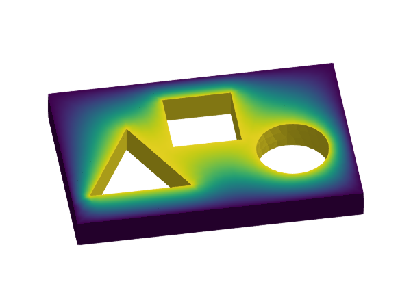

p-Laplacian

Problem statement
Find the scalar-field $u$ such that
\[\left\lbrace \begin{aligned} -\nabla \cdot \sigma(u) = f\ &\text{in}\ \Omega,\\ u = -1 \ &\text{on} \ \Gamma_0,\\ u = 1 \ &\text{on} \ \Gamma_1,\\ \sigma(u)\cdot n = 0 \ &\text{elsewhere on} \ \partial\Omega, \end{aligned} \right.\]
with $\sigma(u) = |\nabla u|^{p-2} \ \nabla u$ and $p>2$. The vector field $n$ is the outwards unit normal vector to $\partial\Omega$. The computational domains are defined in the mesh file model.msh. The domain $\Omega$ is represented by the 3D faces in this mesh. The domain $\Gamma_0$ is represented by the physical group named "sides" and $\Gamma_1$ is the union of the physical groups named "circle", "triangle", and "square". To solve this PDE, we use a conventional Galerkin finite element method with conforming Lagrangian FE spaces.
Implementation
Load dependencies form Julia stdlib.
using LinearAlgebraImport other dependencies.
import GalerkinToolkit as GT
import PartitionedSolvers as PS
import NonlinearSolve
import ForwardDiff
import GLMakie as MakieRead and visualize the mesh.
assets_dir = normpath(joinpath(@__DIR__,"..","..","..","assets"))
msh_file = joinpath(assets_dir,"model.msh")
mesh = GT.mesh_from_msh(msh_file)
Makie.plot(mesh,color=:pink,strokecolor=:blue)Info : Reading '/home/runner/work/GalerkinToolkit.jl/GalerkinToolkit.jl/assets/model.msh'...
Info : 95 entities
Info : 2151 nodes
Info : 10691 elements
Info : Done reading '/home/runner/work/GalerkinToolkit.jl/GalerkinToolkit.jl/assets/model.msh'
Define domains.
dirichlet_0_names = ["sides"]
dirichlet_1_names = ["circle", "triangle", "square"]
Ω = GT.interior(mesh)
Γ0 = GT.boundary(mesh;physical_names=dirichlet_0_names)
Γ1 = GT.boundary(mesh;physical_names=dirichlet_1_names)
Γd = GT.piecewise_domain(Γ0,Γ1)Define forcing data.
g0 = GT.analytical_field(x->-1.0,Ω)
g1 = GT.analytical_field(x->1.0,Ω)
g = GT.piecewise_field(g0,g1)Define the interpolation space.
k = 1
V = GT.lagrange_space(Ω,k;dirichlet_boundary=Γd)Interpolate Dirichlet values.
T = Float64
uh = GT.rand_field(T,V)
GT.interpolate_dirichlet!(g,uh)Visualize the Dirichlet field.
Makie.plot(Ω,color=uh,strokecolor=:blue)
Define numerical integration.
degree = 2*k
dΩ = GT.measure(Ω,degree)Define weak form.
const ∇ = ForwardDiff.gradient
const q = 3
flux(∇u) = norm(∇u)^(q-2) * ∇u
dflux(∇du,∇u) = (q-2)*norm(∇u)^(q-4)*(∇u⋅∇du)*∇u+norm(∇u)^(q-2)*∇du
res = u -> v -> GT.∫( x-> ∇(v,x)⋅GT.call(flux,∇(u,x)), dΩ)
jac = u -> (du,v) -> GT.∫( x-> ∇(v,x)⋅GT.call(dflux,∇(du,x),∇(u,x)) , dΩ)Define non-linear problem using the automatic assembly loop generator. We can define a problem object from SciMLBase that can be solved with NonlinearSolve.
p = GT.SciMLBase_NonlinearProblem(uh,res,jac)Solve it with NonlinearSolve.jl.
sol = NonlinearSolve.solve(p;show_trace=Val(true))
@assert sol.retcode == NonlinearSolve.ReturnCode.Success
Algorithm: NewtonRaphson(
descent = NewtonDescent(),
autodiff = AutoForwardDiff(),
vjp_autodiff = AutoFiniteDiff(
fdtype = Val{:forward}(),
fdjtype = Val{:forward}(),
fdhtype = Val{:hcentral}(),
dir = true
),
jvp_autodiff = AutoForwardDiff(),
concrete_jac = Val{false}()
)
---- ------------- -----------
Iter f(u) inf-norm Step 2-norm
---- ------------- -----------
0 1.36614607e+01 0.00000000e+00
1 3.44017584e+00 1.67204954e+01
2 8.76428979e-01 7.81572921e+00
3 2.28479621e-01 3.14338909e+00
4 4.84098485e-02 1.03715482e+00
5 1.00329244e-02 2.53508734e-01
6 6.68532707e-04 6.17205092e-02
7 1.69981855e-05 9.95056336e-03
8 2.20306565e-07 6.44266162e-04
9 4.56423869e-11 5.27431186e-06
10 3.88578059e-16 1.02944931e-09
Final 3.88578059e-16
----------------------Get the FE solution object
uh = GT.solution_field(uh,sol)Visualize the solution
Makie.plot(Ω;color=uh,strokecolor=:black)
We can also create a nonlinear problem object to be solved with PartitionedSolvers. This is specially useful for the distributed case, but it also works for sequential runs.
uh = GT.rand_field(Float64,V)
GT.interpolate_dirichlet!(g,uh)
p = GT.PartitionedSolvers_nonlinear_problem(uh,res,jac)Define a nonlinear solver with and solve the problem PartitionedSolvers
s = PS.newton_raphson(p,verbose=true)
s = PS.solve(s)
uh = GT.solution_field(uh,s)GalerkinToolkit.DiscreteField(…)Visualize the solution
Makie.plot(Ω;color=uh,strokecolor=:black)
Now, solve while showing the intermediate results in the iteration process.
uh = GT.rand_field(Float64,V)
GT.interpolate_dirichlet!(g,uh)
p = GT.PartitionedSolvers_nonlinear_problem(uh,res,jac)
s = PS.newton_raphson(p)
color = Makie.Observable(uh)
fig = Makie.plot(Ω;color,strokecolor=:black)
fn = joinpath(@__DIR__,"fig_p_laplacian.gif")
Makie.record(fig,fn,PS.history(s);framerate=2) do s
color[] = GT.solution_field(uh,s)
end
This page was generated using Literate.jl.